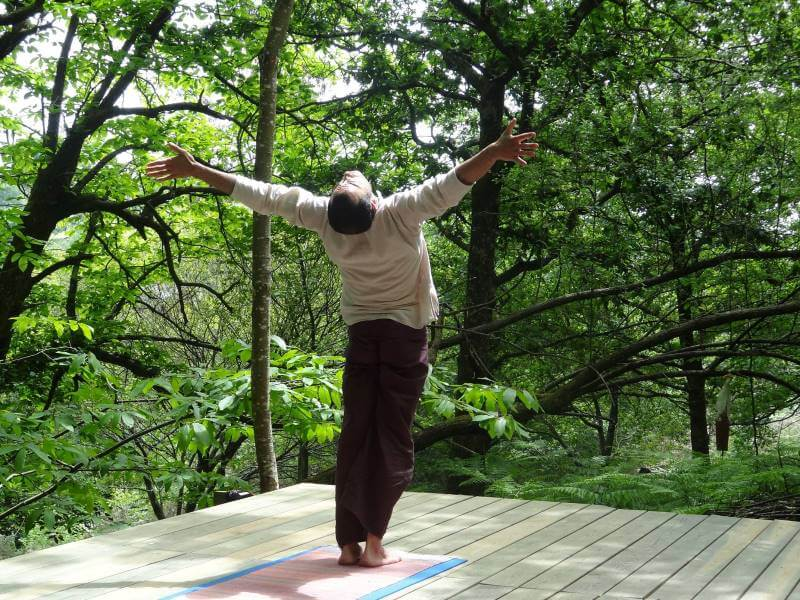

Conozcamos los estilos de Yoga que puedes practicar en nuestra sala
El Yoga significa Union, uno, sintesis de cuerpo, alma y ser. Con el paso del tiempo se han ido diferenciando algunas formas distintas para la práctica. Vamos a conocerlas, siempre teniendo en cuenta que el yoga es uno solo.
